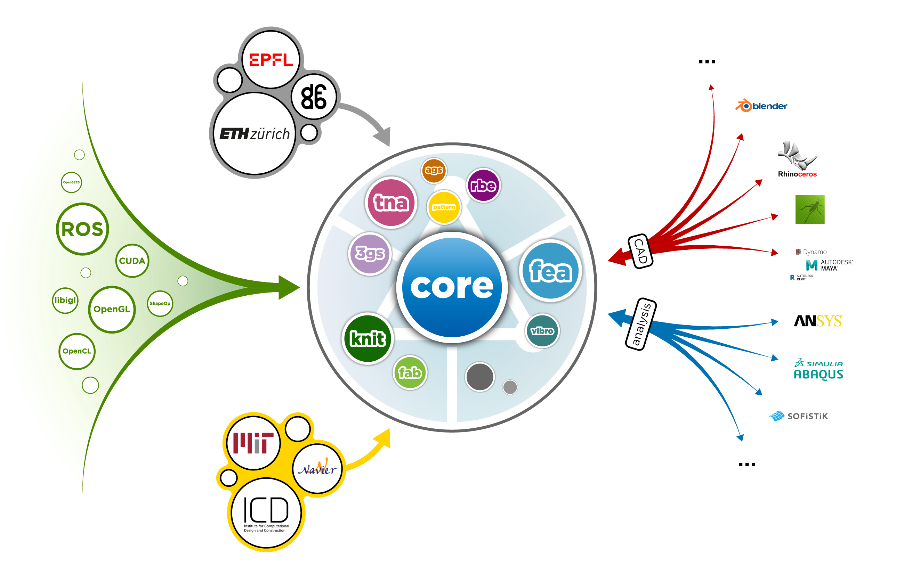
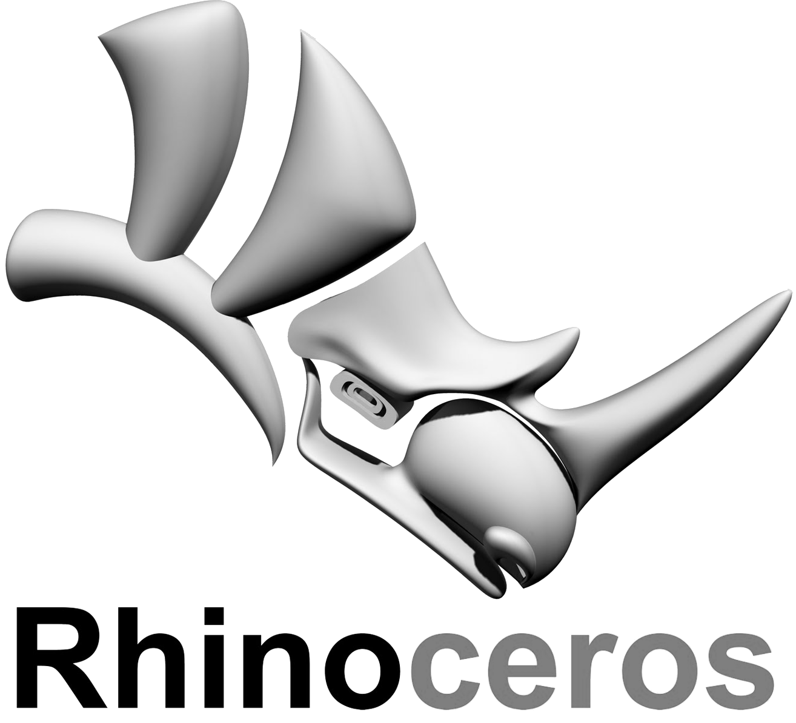

DRY(O)
Don't repeat yourself (or others). COMPAS provides easy access to previous computational work, such that you don't have to reinvent the wheel over and over again.
Share your Work
COMPAS is open source framework with a permissive license. Research built upon or compatible with this framework can be easily shared and reused, cross platform and in various software ecosystems.
Collaborate
The AEFC world is highly multidisciplinary. COMPAS simplifies collaboration between researchers and teams with various academic baclgrounds, and facilitates the interaction with industry.
Getting started
COMPAS is written in Python and can be easily installed using popular package managers on multiple platforms.
$ conda create -n research COMPAS
$ conda activate research
$ python -m compas
'0.15.6'
$
Core
The main library of COMPAS provides flexible data structures, a geometry processing library, robot fundamentals, numerical solvers, and various other components as a base framework for computational AE(F)C research.


CAD Integration
CAD tools are everywhere in AEFC, both in research and in practice. COMPAS provides a consistent interface for visualising and interacting with data structures, and for working with geometry, in Blender, Rhino, RhinoMac, and Grasshopper.

Geometry Formats
COMPAS supports several 3D geometry file formats for loading and saving 3D geometry.
Data IO
Using flexible data management with Python dictionaries and json serialisation, instances of COMPAS data structures and geometry objects can be saved to disk, sent over a network or to a subprocess, and reloaded witout loss of information.